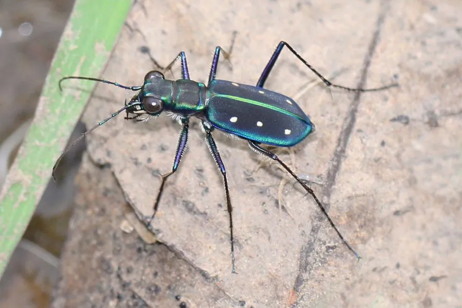

昆虫 · 动物界
金斑虎甲 Cicindela aurulenta

鞘翅金绿带斑、行动敏捷的虎甲，常在地面短距离疾飞捕食蚂蚁和小虫，遇到惊扰便迅速飞走，是昆虫中的短跑健将。
- 分类
- 门节肢动物门纲昆虫纲目鞘翅目科虎甲科属虎甲属
- 栖息环境
- 河滩、沙地、林缘小径等阳光充足的裸露地面
- 地理分布
- 中国南方，以及东南亚地区
- 保护级别
- 暂无评估
物种志
金斑虎甲成虫体长 15–20 mm，体呈金属绿、蓝绿或铜绿色，鞘翅上散布淡黄至金色的斑点，斑点在个体间略有变化；头部大，复眼突出，上颚长而弯曲，像一对弯刀。
金斑虎甲分布于中国南方以及东南亚的河滩、沙地和林缘小径，喜欢在阳光充足的裸露地面上活动。它是凶猛的捕食者，常在地面快速奔跑追逐蚂蚁、蝇类和小型甲虫，发现猎物后突然加速扑咬。虎甲的奔跑速度在昆虫中名列前茅，但奔跑时视力会短暂下降，因此它常停下来重新定位猎物。受惊时它会展翅短距离飞走，很少长时间飞行。幼虫生活在沙土中的垂直洞穴里，用巨大的上颚伏击路过的昆虫。金斑虎甲对栖息地干扰敏感，是沙地环境的指示物种。
形态与习性
- 食性捕食蚂蚁、蝇类和小型甲虫
- 体长15–20 mm
- 体色金属绿至铜绿色，鞘翅有金黄斑点
- 奔跑地面疾跑速度极快，常停下重新定位猎物
- 幼虫在沙土中挖垂直洞穴，伏击路过昆虫
- 环境指示对栖息地干扰敏感，可用于沙地监测
趣味知识
- 虎甲奔跑太快时视力会短暂下降，所以要停下来重新看清猎物。
- 受惊时它只飞一小段就落地，很少做长距离飞行。
- 它的幼虫守在沙洞底部，用一对大上颚夹住路过的昆虫。